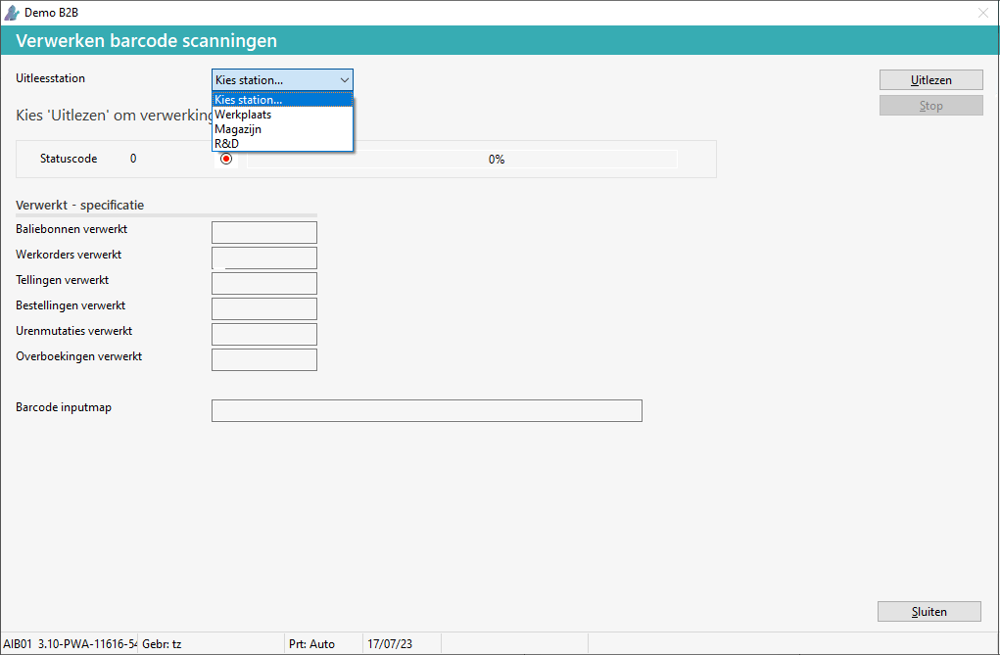
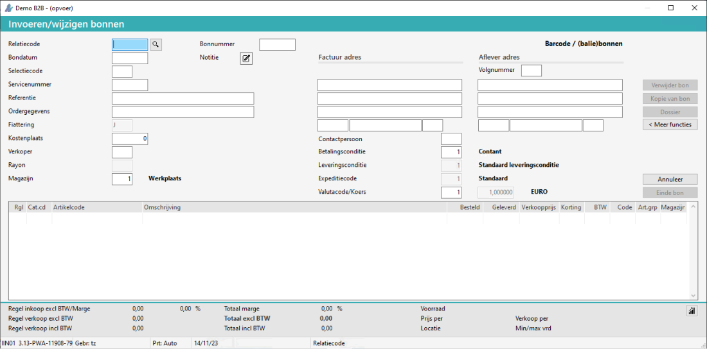
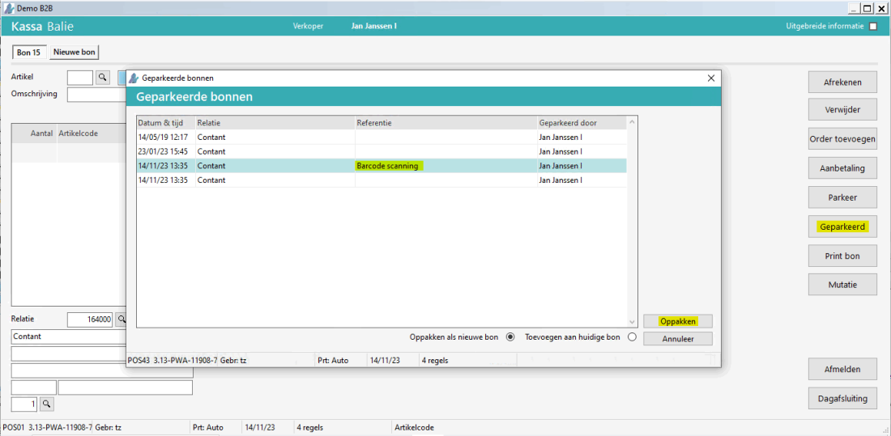
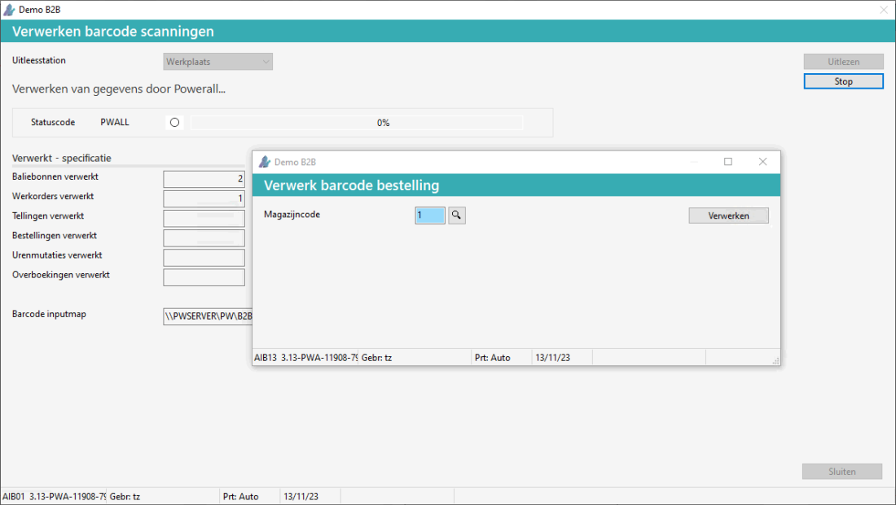
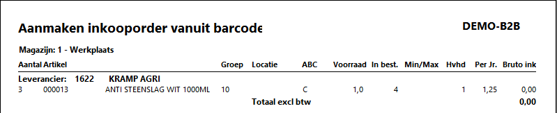
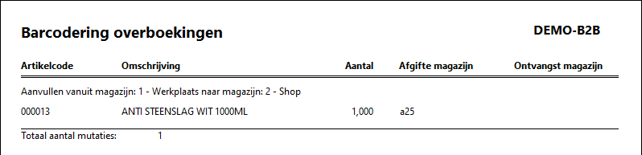
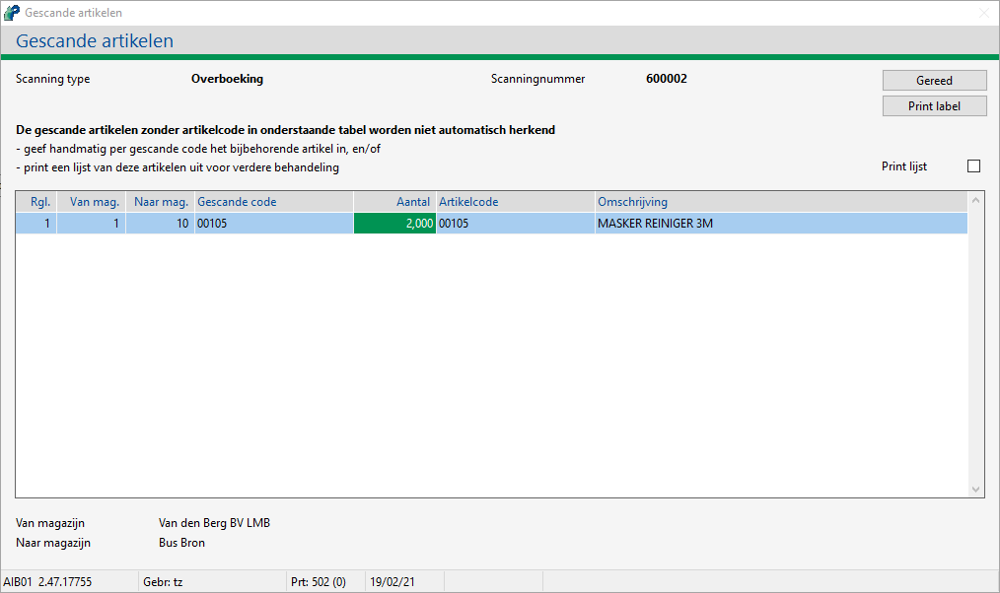
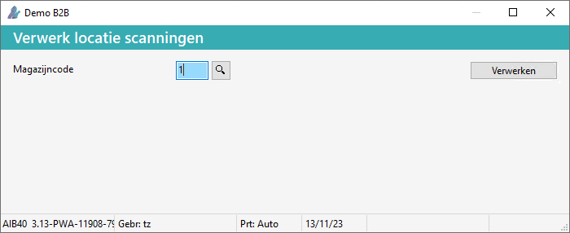
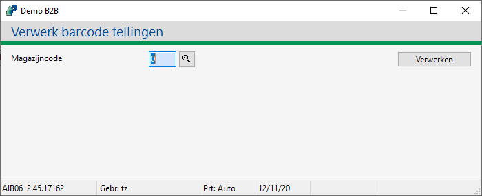
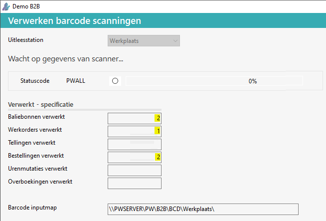

Ga naar Uitlezen barcodescanner (BXU).
-
In Menu 3.0 onder
 Artikelen > Barcodering en EPC
Artikelen > Barcodering en EPC
• Het scherm Verwerken barcode scanningen verschijnt.
Selecteer het Uitleesstation optioneel.
Opmerking: Alleen zichtbaar bij de instelling gebruik meerdere stations is ja.
Kies voor de knop Uitlezen.

Afhankelijk van de soort ontvangen scanning, verschijnt het volgende bij:
-
Balie
 Klik hier voor meer informatie over de balie functie:
Klik hier voor meer informatie over de balie functie:
Bij de instelling verwerking via bonnen, verschijnt het pop-up scherm Invoeren/wijzigen bonnen.
-
Geef de relatie in.

-
Na Enter worden de gescande artikelen toegevoegd in de regels.
Bij de instelling verwerking via kassa, worden de artikelen 'geparkeerd', zie Invoeren kassabonnen, er verschijnt geen pop-up scherm.
D.m.v. de knop Geparkeerd en Oppakken, kan de transactie, met referentie Barcode scanning, verder afgehandeld worden.

-
-
Bestellen
Klik hier voor meer informatie over Bestellen:
Het pop-pup scherm Verwerk barcode bestelling verschijnt.
-
Wijzig eventueel de magazijncode.
-
Kies voor de knop Verwerken.

-
De ingescande artikelen worden op een inkooporder gezet.
Het overzicht Aanmaken inkooporder vanuit barcodescanner wordt weergegeven op het scherm.

-
Of
Op de Goedkeuren bestaladvieslijst, hierbij verschijnt eerst onderstaand scherm instelling.Zie Besteladvieslijst stap 5a.
-
-
Overboeken
Klik hier voor meer informatie over overboeken:
Het scherm Barcodering overboeking verschijnt .

Als artikelen niet herkend worden, verschijnt onderstaand scherm.

-
Locatie
Klik hier voor meer informatie over Locatie:
Het pop-pup scherm Verwerk locatie scanningen verschijnt.
-
Wijzig eventueel de magazijncode.
-
Kies voor de knop Verwerken.

-
De locatie van het artikelen wordt bijgewerkt, van dit magazijn.
Het overzicht Uitzonderingen locatiescanning wordt weergegeven op het scherm.
-
-
Tellen
Klik hier voor meer informatie over Tellen:
Het scherm Verwerk barcode tellingen verschijnt.
-
Geef de magazijncode in.
-
Kies voor de knop Verwerken.

-
Bij kleine machine artikelen verschijnt een melding, als de voorraad (serienummer) gecorrigeerd moet worden. Voor meer informatie zie:
-
Kleine machines Voorraad correctie
-
-
-
Werkorder
De gescande artikelen worden direct toegevoegd op de werkorder.
Afhankelijk van de instelling werkorders bijwerken worden de artikelen getotaliseerd of toegevoegd.
{kind=link}
Bij Verwerkt - specificatie is te zien, wat er verwerkt is.
-

Als er geen gegevens meer uitgelezen moeten worden:
-
Kies voor de knop Stop.
-
De melding Wilt u stoppen met het uitlezen van de barcodescanner? verschijnt.
-
Kies voor de knop Ja.
-
-
Kies voor de knop Sluiten.